= The Definite Guide to Vintage Story =
Welcome! This guide will give newcomers (aka. fresh wolfbait) an overview of mechanics, tasks and tips to start out in Vintage Story, but may even let experienced players find out the odd thing here and there that they did not know themselves.
How to use this guide
Info boxes like this one will appear throughout this guide. Click to open / close them.
The navigation to the left and any light blue links will bring you to their relevant section. Light pink links are to sections which have not been written yet. Links to external sites look like that.
You already know that you can use your browser's back button to return to the previous page, but the same applies to links that move you elsewhere on the same page. So you can click on a topic that interests you, and then return to exactly where you were before in this guide by going back.
I hope this will prove to be useful to you!
~ copygirl üíö
~ copygirl üíö
Controls
You might already be familiar with games such as Minecraft, and the controls in Vintage Story are very similar, so it's likely you'll feel right at home. I would still recommend you glance over this section, since you do have a few more ways to interact with the game. This is just a quick overview of the most important controls and you can have a look at a more extensive list in the Controls settings.
Movement
| WASD | Move |
| Shift | Sneak1 |
| Ctrl | Sprint2 |
| Space | Jump3 |
Interaction
| Break1 / Attack | |
| Place2 / Interact | |
| Scroll through hotbar slots | |
| 0-9 | Select hotbar slots 1 to 10 |
| Q | Drop held item3 |
| G | Sit down4 |
| X | Switch offhand item5 |
| F | Select tool mode (for voxel crafting) |
Changing hotbar keybindings
Personally, I like to keep my last 4 hotbar slots easily accessible on the keys ZXCV (or Y if you're on QWERTZ). This requires moving some keybindings however, so I put "Switch offhand item" on F, and "Open/close character inventory" on I.
Interface
| Esc | Open/close escape menu1 |
| H | Open/close handbook |
| E | Open/close inventory2 |
| C | Open/close character inventory |
| M | Open/close map dialog3 |
| F6 | Show/hide minimap |
| F4 | Show/hide all HUD elements |
| F12 | Take and save a screenshot4 |
Missing HUD elements
Some players might find themselves lacking an important HUD element, such as the minimap (F6), coordinates and facing (V), block/entity info (B) and block/entity interaction help (N). This may be due to having pressed one of those keys by accident. If you are prone to doing that, I may recommend changing the keybinding to something you won't accidentally press, such as Ctrl+\. Note that you can also enable and disable these in the Interface settings.
Immersive Mouse Mode and the Alt key
In the Interface settings, the game also offers an "Immersive Mouse Mode" option. Turning this on will prevent most ingame dialogs from taking away your first-person camera control, and block dialogs will appear floating above the blocks they belong to. Now you can move items between containers with the crosshair! To access your inventory, you will have to hold Alt to unlock the mouse cursor.
But even without Immersive Mouse Mode, the Alt key might still have its uses. It essentially inverts whether your mouse cursor is grabbed by the game. You can use it to rearrange your hotbar without opening your inventory, as well as turn your camera around even if you have any number of dialogs open, for example to access a chest that is hiding behind you.
Your First Day
Here is everything you might want to know for your first day(s) in Vintage Story.
When you start out in a new world, you're greeted by the outfit selection dialog, and another one that greets you, telling you about the handbook and a starter guide on the official wiki - which you won't need because you have this one!
Character
 On first joining a world, you will be able to pick your clothes from a very limited selection of tattered rags. If you accidentally close this dialog without clicking "Confirm Selection", it will reappear next time you join. And, if you're wondering: Yes, you can discover more.
On first joining a world, you will be able to pick your clothes from a very limited selection of tattered rags. If you accidentally close this dialog without clicking "Confirm Selection", it will reappear next time you join. And, if you're wondering: Yes, you can discover more.
Opening your character dialog (C) ingame, allows you to change your clothing and equipped armor. But along with this dialog, an additional "Stats" dialog will appear next to it.
 The nutrition bars will fill up as you eat foods in those categories. You will find that cooked meals are an especially good way to fill multiple at once. This is important because you can raise your maximum health from 15 health points (by default) to a total of 25 when all 4 categories are full.
The nutrition bars will fill up as you eat foods in those categories. You will find that cooked meals are an especially good way to fill multiple at once. This is important because you can raise your maximum health from 15 health points (by default) to a total of 25 when all 4 categories are full.
Health and satiety displayed here are also visible above the hotbar as the red and green bars to the left and right, respectively. If you're curious what the cog in the center does, go and read up on the Temporal Stability mechanic in the handbook. The additional stats are affected by the armor you wear, and notably, carrying an item in your offhand raises your hunger rate by 25%.
Death, respawning and setting your spawn
Remember the location you first start in a fresh world, because it's where you will be reappearing whenever you die. That is, until you get a rare item drop called temporal gear, which you use by holding until it disappears, setting your new spawn point.
Beware that, with the default world settings, you will drop your items on the ground, which you have some amount of time to retrieve. And, at this moment, there are no automatic death waypoints.1
Beware of the wolves! üê∫
Even if the game tells you that you have a number of days before monsters appear, you still have to watch out for the aggressive wildlife. Wolves and hyenas will hunt you down if you happen to get to close to them. If you hear howling, or even just the sound of a puppy barking, be very careful, and ready to run!
Male bighorn sheep - those with the large curvy horns - also don't like it when you get into their personal space, but fortunately they don't persue you unless provoked.
Handbook
Before you jump right into the game, you should definitely be aware of the ingame handbook, which can be opened by pressing H. You can also hover over an item in your hotbar, inventory or any container and press H to directly jump to its page, or Sneak+H to do the same for blocks in the world.
The handbook allows you to read information about certain mechanics (such as 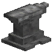smithing), how to create an item and what it can be used for. Navigate it using the search, or click on icons and links to move around and use the back button to go to where you were previously.
In addition to this handbook, you can also use the already mentioned Vintage Story Wiki for more in-depth information about certain topics beyond what this guide can cover.
Resources
The following list shows some important resources you will want to be looking out for early on.
Waypoint everything
Especially when starting out, and you don't have the inventory space or place to call home, you might not be able to take everything useful or interesting with you. So be sure to set down waypoints by opening the map with M and pressing on it.
If you prefer, you can also use a command to create a waypoint exactly where you stand. Simply type /waypoint add [color] [name] into the chat (T). You can edit and delete any waypoint you've placed by pressing on an existing marker.
| Tall Grass |
When harvested with a knife, drops a piece of 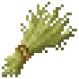dry grass. Can be made into
hay 10
|
|
| Sticks |
Sometimes found laying about, you can also get them from breaking leaves, in particular branchy ones. They're used to create tools, a firestarter, torches,
ladders 3
|
|
| Rocks |  |
Certain stones can be used to craft tool heads: Granite, andesite, basalt and peridotite. Other rock types, such as sandstone pictured here, are too soft. Can be thrown at enemies for minor damage. |
| Flint | A bit more rare than stones, but found anywhere in the world. Slightly better material to make tool heads from, and unlike stones also arrow heads. | |
| Obsidian | Found only in areas where the top layer of rock is basalt. It's the best non-metal material for tools. Below patches of obsidian stones, you may find obsidian rock underground. | |
| Copper |  |
Will yield 1 to 3 copper nuggets.2 Consider holding off on collecting them, due to your initially limited inventory space. Either way, be sure to create a waypoint where you find them, because there is a surface deposit of copper ore hiding below! |
| Cattail |
Found near water, cooper's reed will yield cattail.3 Use a knife, or you'll destroy the plant. Harvesting it a second time drops a root to replant or cook. Used for
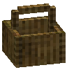hand baskets 2
2
2
2
2
3
3
3
3
3
3
3
3
|
|
| Horsetail |  |
This special flower generally found in forests allows you to create
horsetail poultices 4
2
4
|
| Clay | Is used to form pottery and molds, important for cooking, 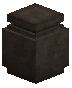preservation and moving into the copper age. There's also a much rarer varient called fire clay which is used in the process to create your first iron. | |
| Terra Preta |
This dark and especially rare soil is the best block to till into farmland to grow your crops on the quickest, so keep a lookout for it. Just be aware that, once tilled, it can't be picked up anymore.4 |
Knapping
It's time to make your first tools! To do so, you need to hold at least 2 of any knappeable material (Flint, granite, andesite, basalt, peridotite or obsidian) in your hand, then Sneak+ on the ground. Using flint, you will begin knapping right away. With stones, you have to "place" a second one against the first.
A dialog will appear, letting you chose what you want to make. You may want to start with a pair of knives, and eventually you'll also need an axe. You might want to consider a spear or two to hunt or defend yourself, but inventory space is precious right now.
 Next, a flat grid of voxels will appear on the ground, some of them highlighted with an orange outline. While holding another item of the same material, knap away voxels either by holding down or clicking at your own pace, until no highlighted voxel remains. You can break away multiple voxels by disconnecting them from the main work piece.
Next, a flat grid of voxels will appear on the ground, some of them highlighted with an orange outline. While holding another item of the same material, knap away voxels either by holding down or clicking at your own pace, until no highlighted voxel remains. You can break away multiple voxels by disconnecting them from the main work piece.
Consider sitting down using G to get closer to the crafting surface. Once you're done and received your tool head (here, 2 knife blades) slap it into the 3x3 crafting grid in your inventory (E) with a stick below to receive your finished tool.
Voxelcrafting using mouse cursor
You might feel more comfortable working on these voxel flavored crafting recipes if your camera wasn't constantly moving around. To do this, open any dialog or hold the Alt to unlock the mouse.
Inventory Expansion
Especially once you have a knife, you can look around bodies of water for cooper's reed, which will give you cattail. Just 10 of these can be crafted into a single
hand basket
1, and 40 is enough to fill all of the bag slots you can see to the right of your hotbar. Each hand basket adds 3 slots to your previously non-existant inventory.
2
2
2
2
2
-
Later in the game you will gain access to larger bags:
-
 Hunter backpacks(4 slots) require killing a sheep or33333
Hunter backpacks(4 slots) require killing a sheep or33333 boar for their 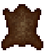medium hide2.
boar for their 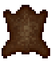medium hide2.
-
Linen sacks(5 slots) only require 20 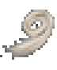flax fiber in total to make.
-
Backpacks(6 slots) require a long leatherworking process.2222
Dropped bags contain their items
Each of the slots in your inventory corresponds to one of the bags you have equipped. You might notice this when you pick up an item and it goes into your inventory: The actual bag it ends up in shakes briefly. When a non-empty bag is dropped on the ground, it can only be picked up when there's a free bag slot next to your hotbar.
Keep this in mind when you frantically run to to collect your items after a death, or want to collect the items a friend (or foe) has dropped, or you might unknowingly leave something behind.
Food Gathering
The next worry you might have is your dwindling food bar. Thankfully, there are a number of options when it comes to gathering food:
| Veggies and Grain (Crops) |
Fully grown crops will drop vegetables or raw grain for you to eat. To check their growth stage, look at the block/entity info HUD (toggled with B). However, they also drop a seed bag, which is valuable and you shouldn't leave it behind, but it takes up equally valuable inventory space, and requires farmland to plant.
I personally find |
|
| Berries | These bushes can be harvested for 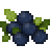berries by holding down . Unlike crops, you can easily replant them by just placing them back down, making them a great first food source to relocate to your base. | |
| Shrooms |  |
Found in humid forests, they come in three varieties: Field mushroom, bolete and fly agaric. When harvested with a knife, they will regrow after a few days. Can you guess which one is poisonous? |
| Small Animals |
 |
Hares, chickens, raccoons and the predatory foxes are scared of you (most of the time). But they are also very quick on their little feet and don't give a lot of meat. Throw spears from afar and aim well for success. |
| Large Animals |
Bighorn sheep and |
|
| Danger Animals! |
 |
Once you're not scared of wolves and hyenas anymore, you can hunt them for their bushmeat for a change. Either keep your distance by throwing spears, or charge them with a longblade and ideally some armor. |
| Cattail | This plant again? Yes, the cattail root can be cooked in a firepit and eaten, in case you're running out of options. They're not really renewable, though. |
On wild crop growth
Crops that are not fully grown do not always drop a seed for you to replant. Therefore you might think it's common sense to leave these plants alone until they slowly grow up on their own. However, know that unlike crops that have been planted on farmland, wild crop growth only occurs in the areas that are loaded around players.
Therefore, you might just want to pick up crops when you go on long exploration trips, far from anywhere you might be staying for a while.
Shelter & Fire
With sunlight being limited, and night approaching, you might want to look into creating a safe spot for yourself. Here are some materials / methods you can use:
- Dig a 2 blocks deep trench, so nothing besides a leaping wolf can get to you.
- Soil can be found anywhere, so why not build with it?
- Cobcan be made by combining soil and dry grass.10
- Hayis also made from dry grass and quick to break. Works well to close up entrances.
- Logs you chop down are perfect to look like load-bearing pillars!
- Cobblestonecan be crafted if you have lots of stones and some clay.2
- Speaking of cobblestone, with some luck you can find and spruce up a ruin.
- Lightand dark mudbrick224
 4224is made with any2244224sand and low fertility soil, specifically.
4224is made with any2244224sand and low fertility soil, specifically.
 Once you've made yourself reasonably comfortable, it's time to make a fire! First place a piece of dry grass followed by 4
firewood
Once you've made yourself reasonably comfortable, it's time to make a fire! First place a piece of dry grass followed by 4
firewood4
Next, use some of those excess sticks you've gathered and turn them into torches by just placing them in the firepit. Torches can start fires even better than the firestarter, so you can throw the latter away. In your inventory they last forever, but keep in mind that when placed, they burn out after 3 days, or simply go out when it's raining, if not covered by a block.
You may create some
baskets
(8 slots) to store those goodies you find, or vessels (12 slots) which are made by clay forming - a good way to spend your night. Of course, if you don't like the darkness, 5 hours can also be skipped by making a
hay bed
and sleeping in it.
3
3
3
3
3
3
3
3

Housekeeping
Once you've gotten yourself settled down a little better, here's a number of things you can learn about while you work towards getting your first copper tools, some of which you might want to apply sooner rather than later.
Clay Forming & Pottery
Clay can be found in areas of the world that are somewhat humid. Fire clay is about 5 times as rare as blue clay, the former being used to build a 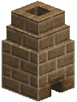bloomery to start into the iron age.
To begin clay forming, hold Sneak+ while holding either type of clay - for most recipes, it does not matter which one you use. Now you can select one of the recipes.
-
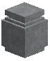Vesselsare quite useful for storage and food preservation.
Clay Forming 35 -
If you want to start cooking, make a
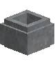cooking potand some 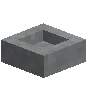bowls
Clay Forming 4244.Clay Forming 44 -
To prepare going into the copper age, I recommend you start with a
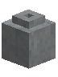crucible, 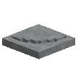pickaxe
Clay Forming 2, 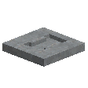hammerClay Forming 12, 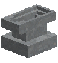anvilClay Forming 12and at least 2 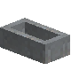ingotClay Forming 28molds. For this you'll need 59 clay total.Clay Forming 352
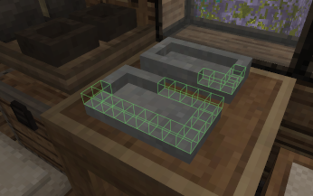
Now you will, similar to knapping, find yourself with a voxel grid, except this time you'll (mostly) be adding voxels rather than removing them, building the chosen item layer by layer. Remove orange voxels with and add them to where you see green outlines with .
You start with 25 voxels worth of clay and when you run out, a piece of clay will be consumed from your hotbar to give you 25 more voxels to work with.
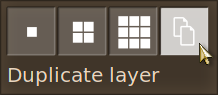
When you press F you can switch the tool mode from 1x1 to 2x2, 3x3 and duplicate layer. This is especially useful once you've finished a layer and the next one is the same. You can then use the duplicate layer mode to easily and quickly fill in the same voxels as the previous layer.
Get closer to the ground by sitting (G), and enjoy the company of your friends, who can help you work on the same recipe. When you're all done, either the items will pop off the ground or you have to pick them up. Burn the unfinished pottery and molds in the firepit to finish them.
Voxelcrafting using mouse cursor
You might feel more comfortable working on these voxel flavored crafting recipes if your camera wasn't constantly moving around. To do this, open any dialog or hold the Alt to unlock the mouse.
Charcoal Pit
An important resource going into the copper age will be 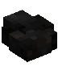charcoal. It is one of the few fuels that burns hot enough to melt down copper nuggets in a 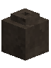crucible, so you can pour it into  molds. This takes a lot of
firewood
and some time. I recommend to do this sooner rather than later, so you can get right into smelting that copper when you have enough of it.
molds. This takes a lot of
firewood
and some time. I recommend to do this sooner rather than later, so you can get right into smelting that copper when you have enough of it.
4
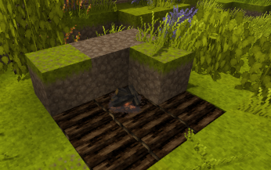
To turn firewood into charcoal, you need to create a structure called a charcoal pit. This can be as small as a single block or as large as 13x13x13, surrounded by solid, non-flammable blocks such as soil, filled entirely with firewood piles.
To begin the charring process, a firepit needs to be placed on top of one of the firewood piles, lit with a torch, and then covered up. If you hear a burning sound, get in there and save as much wood as you can! However, if done correctly, you will see smoke particles being emitted from the entire structure, and it'll be done in 18 in-game hours for you to dig out. Each of the piles of 32 firewood will turn into 6 charcoal on average.
Farming & Husbandry
Planting Bushes
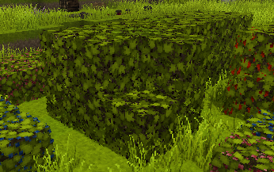
Blueberry, 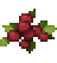cranberry as well as 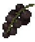black, 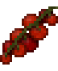red and 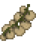white currant bushes can be found in groups in many places. They're the most carefree food source that's also incredibly easy to relocate. Currant bushes can be stacked up to 2 blocks high.
They take about 4½ days to flower, another 4½ to ripen, and then you have about 8½ days to harvest them before they start over again. Bushes are currently not affected by the climate or soil type. Be aware that friendly neighborhood raccoons will happily harvest berries from ripe bushes for you... and eat them.
Farming Crops
| Soil | Fertility | |
| Low | 25 | |
| Medium | 50 | |
| Compost1 | 65 | |
| Terra Preta2 | 80 | |
| Nutrients | Speed |
| >75 | 110% |
| >50 | 100% |
| >35 | 90% |
| >20 | 60% |
| > 5 | 30% |
| ≤ 5 | 10% |
| Fertilizer | N | P | K | |
| 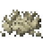 | Bonemeal | 3 | 30 | 0 |
| 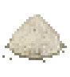 | Saltpeter | 13 | 0 | 44 |
| 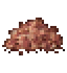 | Potash | 0 | 0 | 66 |
| Crop | Stages | Days | Nutrients | ||
| Rye | 9 | 5.0 | 40 | N | |
| 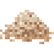 | Spelt | 9 | 4.4 | 40 | |
| Turnip | 5 | 3.0 | 30 | ||
| 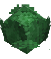 | Cabbage4 | 12 | 6.5 | 40 | |
| 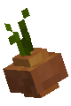 | Onion | 7 | 3.6 | 35 | P |
| 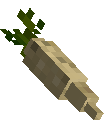 | Parsnip | 8 | 6.0 | 20 | |
| 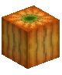 | Pumpkin4,5 | 8 | 3.5 | 30 | |
| Flax | 9 | 4.2 | 50 | K | |
| 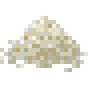 | Rice | 10 | 4.2 | 50 | |
| 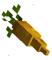 | Carrot | 7 | 4.0 | 40 | |
| 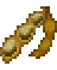 | Soybean | 11 | 5.4 | 35 |
Different types of soil can be tilled using a hoe. Higher quality soil, results in more fertile farmland, which also determines the natural maximum amount of nutrients. For example,  Terra Preta will till into a farmland block with 80 nutrients for each nutrient type.
Terra Preta will till into a farmland block with 80 nutrients for each nutrient type.
Each crop requires wet farmland and one of 3 nutrients (N, P or K) to grow. 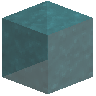Water can hydrate up to 3 blocks away from it.3 The crop's growth speed depends on how many nutrients of its required type are available in the ground. For example, when the nutrient levels are at N=65, P=45, K=15, turnips will grow at 100% speed, onions at 90% and carrots at 30%.
Thus, you need to do crop rotation: When you harvest a crop, plant one that requires a different nutrient (ideally the highest), or leave the farmland bare. The block/entity info HUD (B) shows you the current nutrient levels.
Farmland slowly regains its nutrients, as long as a fully grown crop isn't currently residing on it. Another way to increase nutrients, is to use fertilizers, which will slowly release nutrients into a single farmland block over time, up to a maximum of 100.
Another function of bare farmland is that it grows tall grass and, quite a bit more rarely, horsetail as well.
You will have to build trenches, walls or 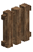fences around your crops, or else hares will snack on them. Thankfully, they will drop the seeds for you to recover, as long as you don't let them despawn.
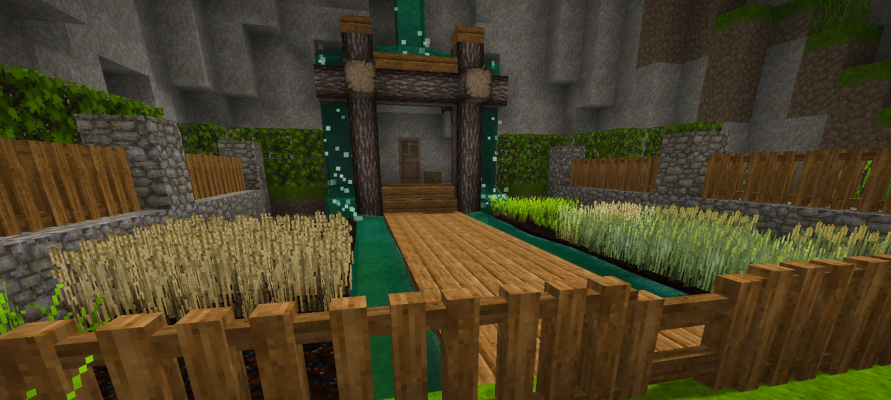